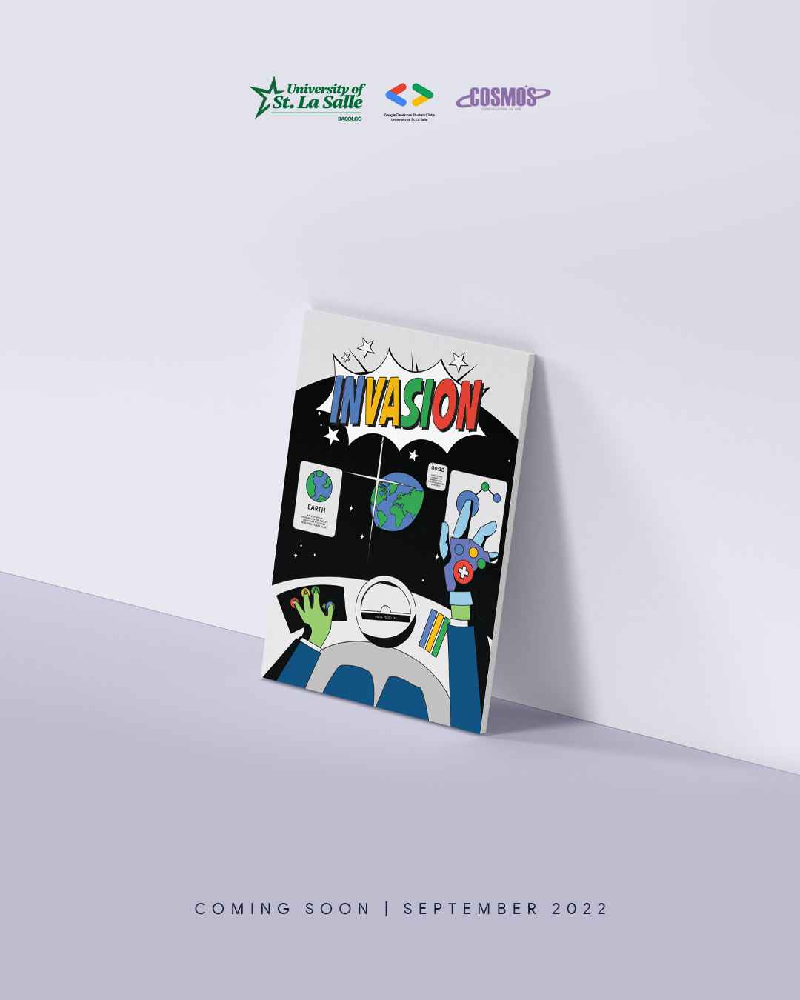
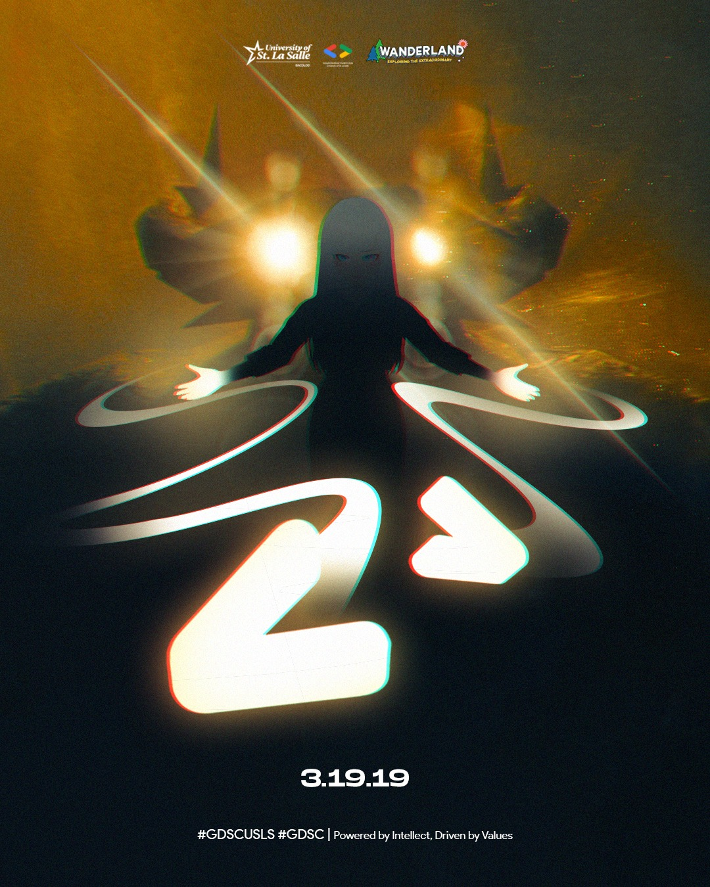
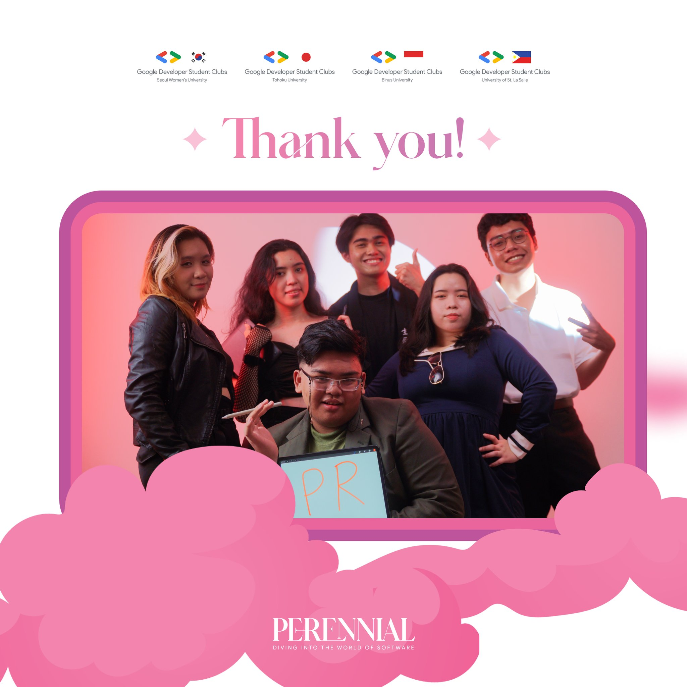
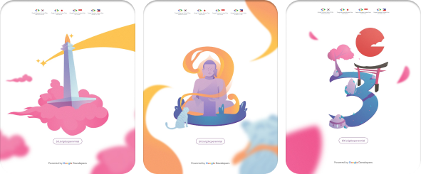
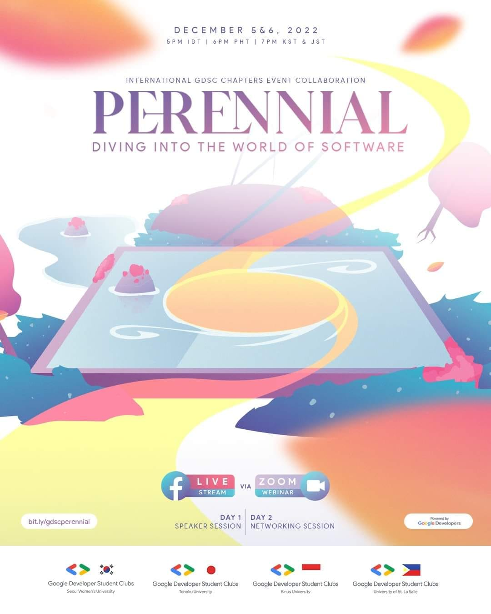

In a behind-the-scenes glimpse, we sit down with Leigh Andrew Eslawa to unravel the dynamics of his collaborative journey with Gian Aibo C. Boyero, diving into the intricacies of crafting captivating event posters that seamlessly blend creativity with brand identity.
How did our collaboration contribute to the cohesiveness of the event posters, aligning with our brand identity?
In our collaborative process, we kick off with dynamic brainstorming sessions on Discord, allowing ideas to unfold digitally. While occasional drifts from our brand identity occur, I see it as a valuable exploration. 
As a team, we deconstruct traditional themes and challenge stereotypes, finding a balance in strengths with Gian refining my expansive ideas. His guidance ensures posters mirror our brand identity and resonate with the audience. Our collaboration goes beyond virtual calls, resulting in creatively aligned posters rooted in our brand's values. Gian's mentorship strikes a balance between innovation and brand consistency, culminating in effective, authentic posters.
Our collaboration became more than just ideas born in virtual calls, manifesting in posters that not only spark creativity but also maintain a seamless alignment with our brand values. Gian's mentorship played a pivotal role - one that I can’t deny - striking a blend of balance between innovation and brand consistency. The end result is a collection of posters that not only effectively conveys a message but does so while remaining authentically rooted in our organization’s identity.
How did our tag team efforts bring a dash of creativity to the event posters, and what unique perspectives did we each contribute to make them stand out?
Our collaborative design efforts for the event posters were a testament to the seamless partnership between Gian and me. Despite our shared tastes in good design, the magic unfolded in the nuances of our unique perspectives.
What set our collaboration apart was the perfect blend of our design sensibilities. Gian's preference for organized aesthetics provided a solid framework, while my inclination towards a more chaotic approach added an element of spontaneity. This complementary interplay between order and chaos not only adhered to the principles of good design but also brought a distinctive and captivating creativity to the event posters."
In your perspective, shed light on how your design decisions navigated the fine line between meeting CEO’s also as the Creative Director expectations and injecting your own artistic brilliance into the event posters.
In my perspective, the challenge of harmonizing design decisions to meet Gian's expectations as both the CEO and Creative Director, while infusing my own artistic touch into the event posters, has been a dynamic journey. Demonstrating adaptability, I quickly learned new art styles tailored to the organization's vision, a trait that became particularly evident during my role as a Design Officer.
The initial drafts of my first posters, under Gian's leadership, didn't quite align with expectations, emphasizing the initial learning curve in comprehending Gian's combined vision as both CEO and Creative Director. However, with each subsequent creation, I actively worked on seamlessly blending the brand identity into my artistic endeavors. As I transitioned into the Lead Designer role, a pivotal shift occurred. I consistently found ways to incorporate the four distinctive colors of the GDSC branding, maintaining a delicate balance while ensuring sufficient white space in the posters. This deliberate effort not only met Gian's expectations but also allowed me to infuse my artistic brilliance, resulting in event posters that resonated with our organization's identity while showcasing a unique visual flair.
Share some anecdotes about moments where your design intuition seamlessly intertwined with the strategic insights from our management, resulting in poster perfection.
Certainly, one memorable instance where my design intuition seamlessly intertwined with strategic insights from our management was during the creation of posters for the international event 'Perennial,' where we partnered with Japan, Korea, and Indonesia.
Gian expressed a desire to incorporate a whimsical theme that resonated with the essence of 'Perennial.' The word itself, denoting something lasting or existing for a long time, sparked an immediate idea in my mind. I envisioned conveying the concept that humankind's creations would endure beyond our existence. Inspired by the idea that future inhabitants might perceive our structures and technology as elements from a fantasy novel, I aimed to encapsulate this notion in the posters.
When I pitched this idea to Gian, the synergy between our design preferences became evident once again. Given our shared tastes in good design, Gian immediately grasped the concept, mirroring the way it resonated with me. This shared understanding of each other's design sensibilities facilitated a smooth collaboration, resulting in posters for 'Perennial' that perfectly balanced strategic intent and creative expression, showcasing a compelling narrative that resonated with our international audience.
Countdown Posters Elaboration - Perennial: An International Event We Mainly Organized
As part of our tradition in every event, we create countdown posters to build up excitement leading up the big day. Perennial was no exception, and being an international event required a step up in creativity. While countdown posters are often overlooked due to their simplicity, I wanted to make every poster special, even the simple countdown posters.
The main poster featured a monitor which was illustrated in the image of how I assumed future inhabitants would perceive it - a portal. Building on this concept, the countdown posters became a journey. Partnered with three other countries, each day leading up to the event highlighted a different country – Japan, Korea, and Indonesia – transforming the countdown into an adventure, as instructed to our writers.
The overarching idea was to make the main poster's monitor a portal guiding the audience through whimsical realities inspired by landmarks from our partnered countries. This imaginative approach aimed to engage our audience beyond just simple numbers counting the days.
This endeavor wouldn't have been possible without the collaborative efforts of my team during my tenure as a Graphics Design Lead. While I pitched the concept, it was Franz Palomares who translated my ideas into cohesion, and Joseph Bryant De Los Santos who brought the illustrations to life. Guiding their work and contributing some touch-ups myself, this creative journey truly unfolded thanks to our collaborative synergy
As we peel back the layers of this design narrative, it becomes evident that Leigh Andrew Eslawa and Gian Aibo C. Boyero's collaboration goes beyond the pixels. It's a journey of exploration, creativity, and a perfect fusion of order and chaos. Stay tuned for more insights into their collaborative endeavors, promising more captivating designs on the horizon.